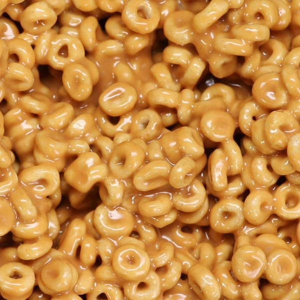

Cerealbites

Ingredients (for 1 serving)
- honey
- peanut butter
- honey nut cereal
Preperation
- Put 1 part peanut butter and 1 part honey in a bowl.
- Microwave for about a minute. Stir until combined.
- Add 3-4 parts cereal. Stir.
- Scoop into bit size pieces and place on wax paper to cool.